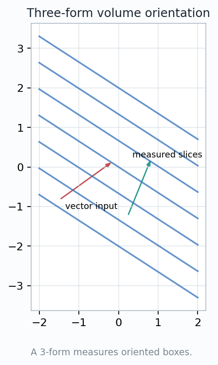
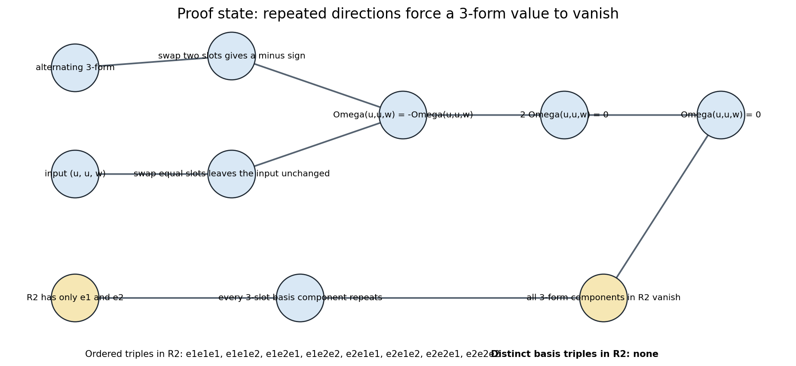
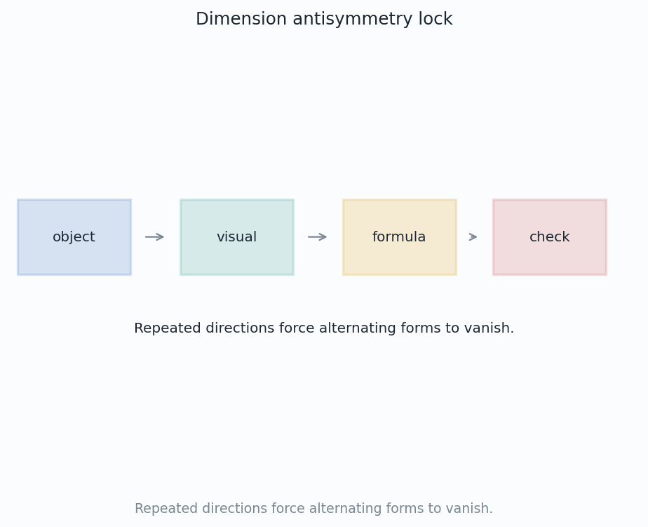
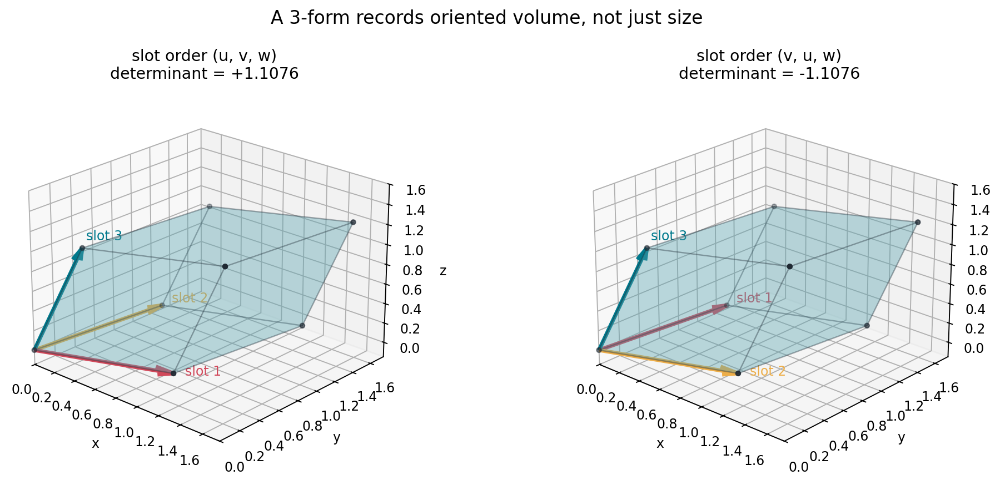
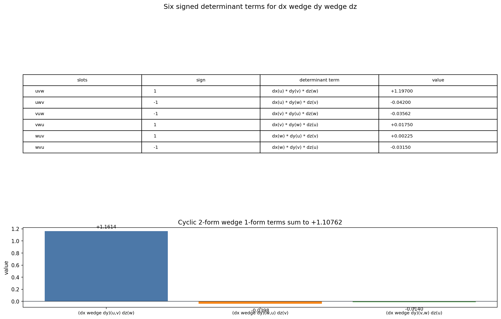
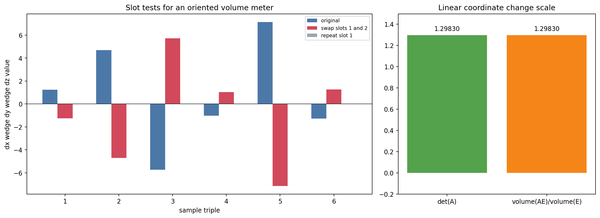
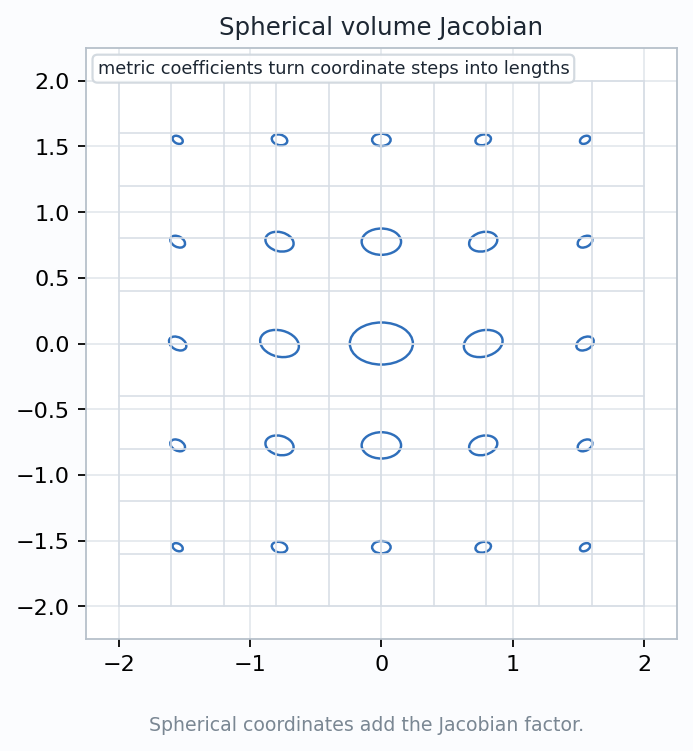
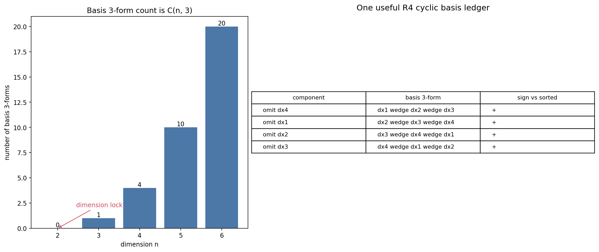
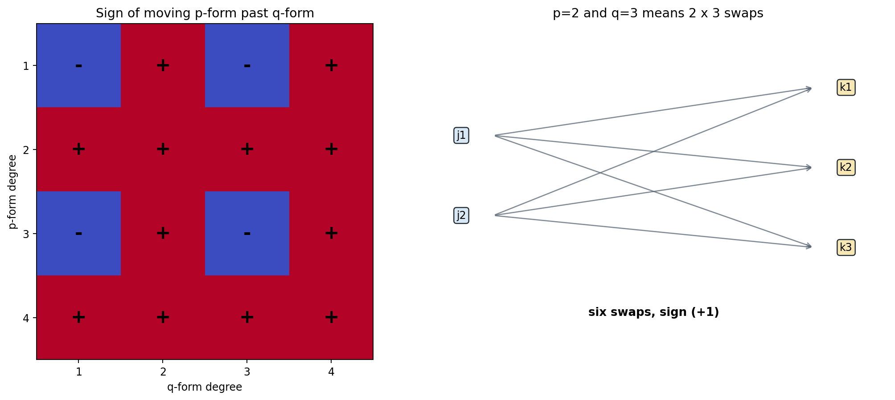

A 3-form is an oriented volume meter: it eats three tangent directions and returns a signed scalar.
How do wedge rules become the operating instructions for measuring signed volume?
$$\Omega_p:T_pM\times T_pM\times T_pM\to\mathbb{R}$$
Alternation forces zeros, determinants supply volume, pullbacks create density, and integration adds local readings.


$$\Omega(u,u,w)=-\Omega(u,u,w)\quad\Longrightarrow\quad \Omega(u,u,w)=0.$$
Any ordered triple chosen from two basis directions repeats at least one direction, so every alternating component vanishes.

A three-slot formula can be written in two dimensions, but alternation makes its value identically zero.
$$dx\wedge dy\wedge dz(u,v,w)=\det[u\ v\ w].$$
The magnitude measures a parallelepiped. The sign records whether the ordered edge triple agrees with the chosen orientation.
Orientation is not decoration on volume; it is part of the scalar reported by the form.


$$\sigma_1\wedge\sigma_2\wedge\sigma_3(v_1,v_2,v_3)=\det\big(\sigma_i(v_j)\big).$$
Each permutation of the three vector slots contributes one product, weighted by its sign.
$$\sum_{\pi\in S_3}\operatorname{sgn}(\pi)\,dx(v_{\pi 1})dy(v_{\pi 2})dz(v_{\pi 3})=1.107625.$$
The two-form has already measured pairs of slots, so the remaining cyclic ledger has three terms instead of six.
Feed it ordered triples of edge vectors, then introduce controlled faults and read the response.
$$\Omega(Au,Av,Aw)=\det(A)\,\Omega(u,v,w).$$
These checks distinguish an oriented volume meter from an unsigned volume calculator.

$$\Phi^*(dx\wedge dy\wedge dz)=r^2\sin\phi\,dr\wedge d\phi\wedge d\theta.$$
The Jacobian determinant of \((r,\phi,\theta)\mapsto(x,y,z)\) simplifies exactly to \(r^2\sin\phi\).
The coefficient is the local volume density that converts coordinate boxes into Euclidean volume boxes.


$$\dim \Lambda^3(\mathbb{R}^n)^*=\binom{n}{3}.$$
Every 3-form is a scalar multiple of \(dx_1\wedge dx_2\wedge dx_3\).
The independent basis forms omit one coordinate at a time, producing four possible oriented triples.
The count is not arbitrary: a repeated label would make the alternating form zero.
$$\alpha\wedge\beta=(-1)^{pq}\,\beta\wedge\alpha,\qquad \deg\alpha=p,\ \deg\beta=q.$$
Move each of the \(p\) one-form factors past each of the \(q\) one-form factors. That is \(pq\) slot swaps.
If \(p\) is odd, \(\alpha\wedge\alpha=-\alpha\wedge\alpha\), so the self-wedge is forced to vanish.

$$\int_R f(x,y,z)\,dx\wedge dy\wedge dz$$
At each point, evaluate the 3-form on the ordered tiny edge triple of the region, then add the scalar readings.
Explain why reversing an orientation changes the sign of the integral but not the unsigned volume of the underlying region.